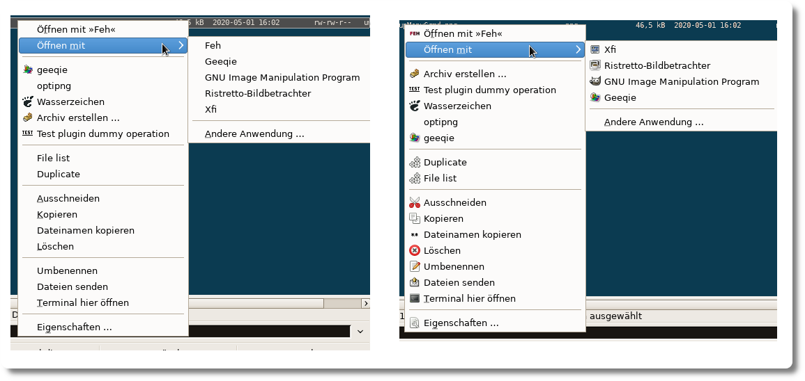
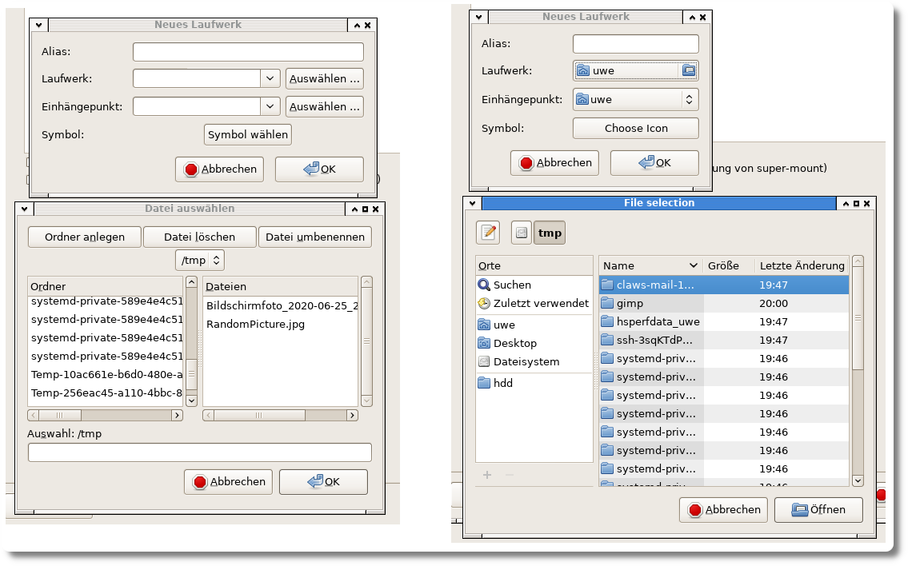

Gnome Commander - Was gibts neues?
Vor ein paar Tagen habe ich die Version 1.10.3 meines Hobby-Projektes "Gnome Commander" veröffentlicht. Neben ein paar kleineren Bugfixes ist der größte Teil der Arbeit in die Entfernung der zwei veralteten Bibliotheken libgnome und libgnomeui geflossen. Diese Bibliotheken sind unter anderem für das Zeichnen von (Popup)-Menüs und Dateiauswahldialogen zuständig gewesen. Beides wird schon seit langem von der Gtk-Bibliothek übernommen und dort wesentlich einfacher umgesetzt.
Unten sind jeweils die vorher-nachher Bilder dargestellt, die einen kleinen Eindruck der Änderungen geben. In der neuen Programmversion wurden noch einige Dinge mehr geändert, aber die Bilder unten reichen für einen kurzen Überblick.
Das erste Bild zeigt das Popup-Menu, welches sich beim Rechtsklick auf eine Datei im Gnome Commander öffnet. Wie man auf der linken Seite erkennt, wurden in der bisherigen Version (1.10.2) nur wenige Symbole neben den Erklärungstexten dargestellt. In der neuen Version 1.10.3 rechts im Bild funktioniert die grafische Anzeige der Icons deutlich besser.
Neben diesem offensichtlichen Vorteil gibt es auch Dinge, die das Entwicklerherz erfreuen. Zum Beispiel wurde das Erstellen von Popups oder Menüs mit der neuen Bibliothek jetzt sehr vereinfacht. Somit konnte ich eine Menge Quellcode entfernen, der nicht mehr benötigt wird.
Im zweiten Bild ist dargestellt, wie sich der Dateiauswahldialog beim Erstellen eines Laufwerks in den Programmeinstellungen geändert hat. Wie man hier auf der rechten Seite sieht, ist der Dialog nun ganz ähnlich zu den "modernen" Linux-Anwendungen. Man hat direkten Zugriff auf die zuletzt verwendeten Datein und kann deutlich einfacher durch das Dateisystem navigieren.
